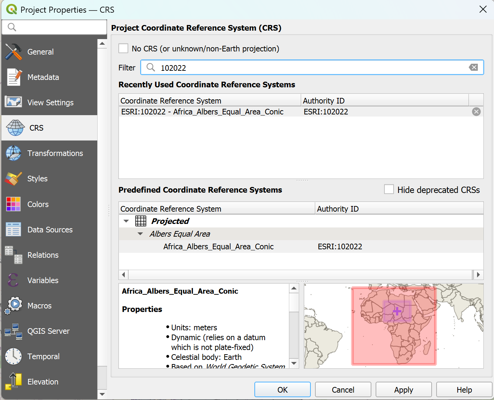
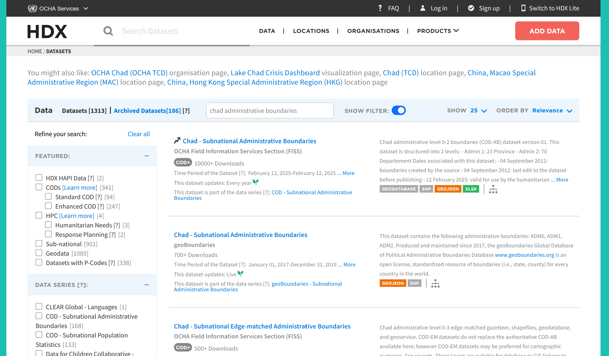
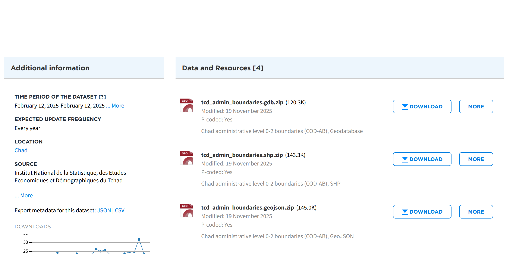
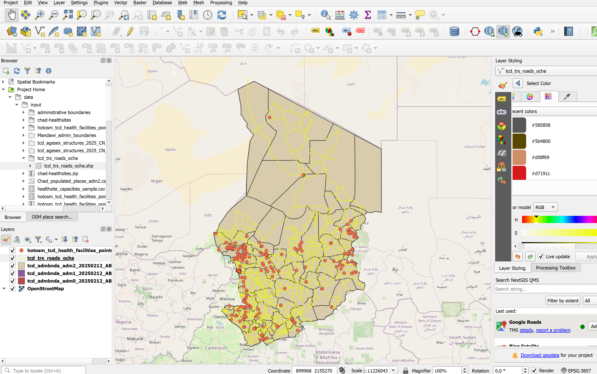
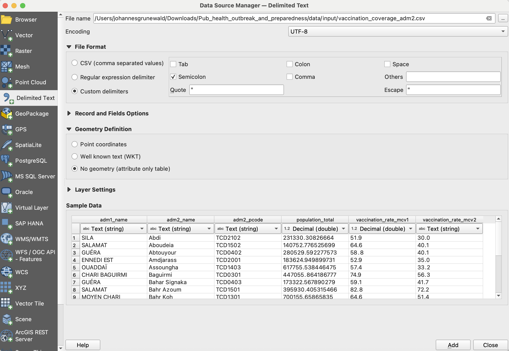
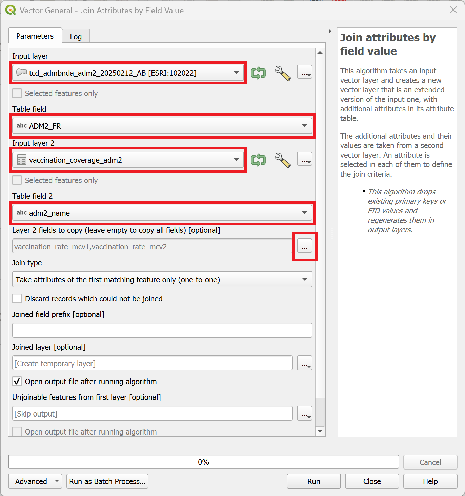
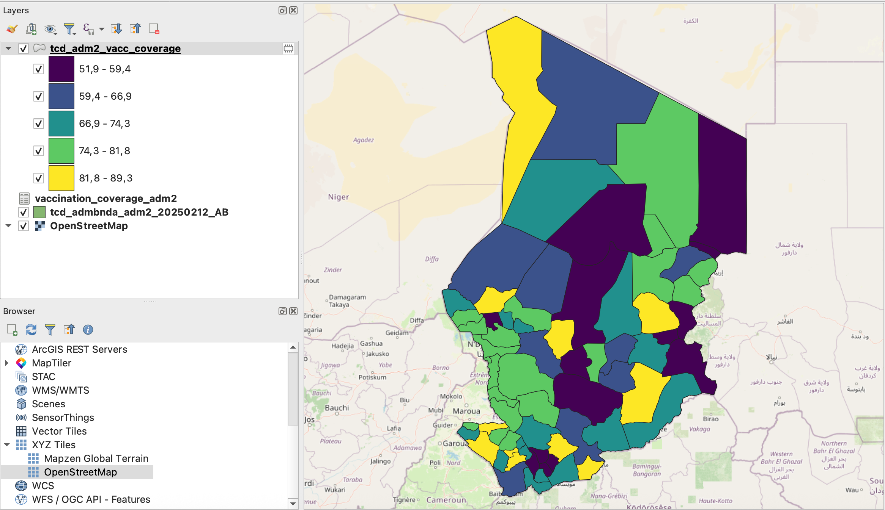

Exercise 1: Creating an overview map of the health system and vaccination coverage#
Background#
Over the past month, health authorities in Chad have reported a surge in measles cases, particularly in Mandoul, Mayo-Kebbi Est, and Logone Oriental regions. The surveillance unit has provided line-list data and existing health facility data. Your first task is to create a base map showing health facility distribution and classify them by service capacity to understand the available response infrastructure.
Available Data#
Dataset name |
Original title |
Publisher |
Downloaded from |
|---|---|---|---|
|
Chad Subnational Administrative Boundaries (level 0: country) |
United Nations Office for the Coordination of Humanitarian Affairs (OCHA) |
|
|
Chad Administrative Boundaries (level 1: regions) |
United Nations Office for the Coordination of Humanitarian Affairs (OCHA) |
|
|
Chad Administrative Boundaries (level 2: province) |
United Nations Office for the Coordination of Humanitarian Affairs (OCHA) |
|
|
Chad Health Facilities (OpenStreetMap Export) |
Humanitarian OpenStreetMap Team |
|
|
Healthsite Capacities |
HeiGIT |
This is a fictional dataset generated for the purpose of this exercise. |
|
Measles vaccination coverage |
HeiGIT |
This is a fictional dataset generated for the purpose of this exercise. |
Note
In this exercise, we will download real datasets from the Humanitarian Data Exchange (HDX) to identify and analyse relevant information. However, the Healthsite Capacities and Vaccination Coverage datasets used here are fictional and created solely for training purposes. They do not represent real-world data.
Tasks#
Task 1: Setting up the folder structure and creating a new QGIS project#
Standard Folder Structure
The single most important geodata management practice is to use a standardised folder structure that contains all parts of the QGIS project. We will save all of our data that we use or create within our QGIS project inside of this folder structure. The paths from a QGIS project to the geodata are by default relative. This means when the data and the project are in a fixed folder structure, you can move the whole structure without impacting the QGIS project or the paths to the data.
A standard folder structure has two principal advantages:
If we share the whole project folder, we can expect the project to run without problems on a different computer.
The folder structure supports the proper organisation of project data and helps ensure the QGIS project will work as intended.
Create a new folder on your computer with the name “GIS_Training_Public_Health_Day_1-2”. In the folder create the following folder structure:
GIS_Training_Public_Health
├── project
├── results
├── styles
└── data
├── input
├── interim
└── output
Open QGIS and create a new project.
Save the project via
Project→Save As.... Navigate to the folder for this training and save it in the/projectsubfolder. Give it a name (e.g.,GIS_Training_Public_Health_Part_1) and clickSave.Now we should set up the Project CRS.
In the bottom right corner of the QGIS window, click on the Projection icon. Let’s choose a metric CRS that depicts Chad without distorting too much. For this exercise, we will use “Albers Equal Area Conic” (EPSG: 102022). In the
Filterbar, enter the name or the EPSG number. The CRS should appear in the “Prefedined Coordinate Reference Systems” Box. Select it and clickApplyandOK.

Setting the Project CRS in QGIS#
{kind=link}
How to choose the correct CRS
Choosing a suitable Coordinate Reference System for your GIS project is crucial. In general, you want to use a CRS that best displays your area of interest. You want to choose a Secondly, you need to think about what kind of calculations you plan to do in your project. CRS exist in two varieties: geographic and metric coordinate reference systems. Geographic CRS use longitude and latitude (degrees) as their coordinates and units of measurements. These are angular measurements and don’t depict distances linearly. Metric coordinate reference systems use coordinates that are given in linear units of measurements (such as meters), which means they represent actual distances on the Earth’s surface. Metric coordinate reference systems, such as UTM, are designed for local and regional mapping and can introduce distortion when applied to larger areas. For very large regions, projections like Albers Equal Area or Mercator are often used to reduce distortion
If you wish to perform distance calculations, you should use a metric CRS.
If you want to know more about Projections and Coordinate Reference Systems, check out this module chapter.
Attention
The project CRS determines which coordinate reference system is being used to display the geodata on the QGIS map canvas. However, it does not change the CRS of layers. Each layer, or dataset, is encoded with a CRS. QGIS reprojects these layers “on the fly” to display layers with different CRS on the map canvas. This does not change the units of measurements or distortion of the actual layers. To perform distance calculations, you will need to reproject the layer to a metric coordinate reference system.
Setting the Project CRS to your desired CRS can help you choosing the correct CRS quicker when running algorithms.
Task 2: Downloading the relevant data#
In your browser, head over to humdata.org
Search for the following datasets
Chad Administrative Boundaries (OCHA): ADM0, ADM1, ADM2
Chad Health Facilities (OpenStreetMap Export)
Chad Roads (OCHA)
{kind=link}

Download the layers.
On the download page, you can usually select different data formats. The formats are indicated by their file endings (e.g.,
.shp,.gpkg,.gdb)Choose the following formats:
Chad Administrative Boundaries (OCHA): Shapefile
Chad Health Facilities (OpenStreetMap Export): GeoPackage for Points, we don’t need the polygons information for this example
Chad Roads (OCHA): Shapefile

Unzip the folders and make sure to save them in the standard folder structure into the
data/input/-folder.
{kind=link}
Task 2: Importing the datasets#
In your QGIS, project, import the following datasets via drag-and-drop:
tcd_admbnda_adm0_20250212_AB.shptcd_admbnda_adm1_20250212_AB.shptcd_admbnda_adm2_20250212_AB.shphotosm_tcd_health_facilities_points_gpkg.gpkgtcd_trs_roads_OCHA.shp
Video: Importing Shapefiles into a QGIS project via drag-and-drop
Attention
Imported files are not saved within the QGIS project. If you move or delete the original file, QGIS will no longer find the respective dataset.
Task 3: The layers panel and the layer concept#
Once we’ve imported all the relevant layers, lets start by arranging the layers logically so we can work with them more easily. On the left, there is the
Layers-panel. Here you can see all the datasets we’ve imported so far.QGIS displays geodata in layers, where each dataset is represented in one layer. The layers are stacked on top of each other.
Lets arrange the layers so we work with them more easily:
The ADM0-layer should go at the bottom, followed by ADM1, then ADM2.
Then we can add the road network.
The healthsites should go on top.
Let’s add a basemap:
In the file browser, scrool down until you see
XYZ-TilesUncollapse it and double-click on
OpenStreetMap. A new layer will be added to your layers-panel, usually at the bottom. Make sure the layer sits at the bottom of the layers panel so all your other layers are visible.
Your QGIS window should look similar to this (with different colours for the layers).
{kind=link}

Let’s investigate the layers that we have added so far. Each vector layer has an attribute table, where each row represents a geometric feature on the map canvas.
Open the attribute table by right-clicking on the ADM2 layer in the layers panel on the left →
Open Attribute Table.A new window will open. This is the attribute table. It shows the vector layer in a tabular format, allowing you to see the attribute values, sort the table, and edit the values using the tools in the top bar.
Take a look at the different columns in the attribute table. What do they show?
Try sorting the attribute table by clicking on the

Open the attribute tables for the layers
hotosm_tcd_health_facilities_points_gpkgandtcd_admbnda_adm2_20250212_AB.shpfamiliarise yourself with the data.Right-click on each layer and select
Task 4: Joining Vaccination Coverage Data with administrative boundaries#
In our data/input-folder, we can find a csv file called vaccination_coverage_adm2. This file includes the vaccination coverage of both the mcv1 and mcv2 vaccine. Thankfully, the dataset includes the district name (amd2_name) and the adm2 pcode. With this information, we can perform a non-spatial join in order to add the vaccination coverage data to our district boundaries layer (adm2).
Attention
Admin Pcodes are well suited for non-spatial joins in QGIS because they provide unique, standardized identifiers that avoid name mismatches and ensure accurate, reliable data linking.
Import the
vaccination_coverage_adm2into your QGIS project:In the top bar, navigate to
Layer→Add Layer→Add Delimited Text Layer...To the right of the
File name-field, click on the three points and navigate to the
three points and navigate to the data/input/vaccination_coverage.csvfile and clickOpen.In the import window, you will see sample data in the sample data field. Take a look at the columns and data available. What kind of data is present in each column?
Unfortunately, there are no columns with the coordinates for the individual healthsites in this data table. Under
Geometry DefinitionselectNo geometry (attribute only table).Click
Add. The layer will appear in your layers tab as a data table, but will not be shown in the map canvas.

Investigate the new vaccination coverage further:
Right-click on the new layer and open the attribute table. What information is available? How is the table structured. We can see that we are able to use the column
ADM2_PCODEto perform a [non-spatial join]
In the processing toolbox on the right, search for the tool “Join attributes by key value” and double-click on it.
A new window will open. Here we can specify the parameters for the
Join attributes by field value-tool.As “Input layer”, select the layer
tcd_admbnda_adm2_20250212_AB.Under “Table field”, select
ADM2_PCODE.As “Input layer 2”, select
vaccination_coverage_adm2.Under “Table field 2”, select
adm2_pcode.Under “Layer 2 fields to copy”, we can select which columns we want to copy. Click on the
three dots to the right of the field and select vaccination_rate_mcv1andvaccination_rate_mcv2. Then, clickOK.Finally, to execute the algorithm, click on
Run.

A new layer called “Joined Layer” will appear in the layers panel. To the right of it, you will see a
 symbol. This symbol indicates that the layer is a temporary scratch layer. This means it will be deleted once you close your QGIS project, even if you save the project. We can save the scratch layer by right-clicking on it and selecting
symbol. This symbol indicates that the layer is a temporary scratch layer. This means it will be deleted once you close your QGIS project, even if you save the project. We can save the scratch layer by right-clicking on it and selecting Make permament....
{kind=link}
{kind=link}
- A new window will open. Here we need to specify the file location and the layer name.
- Leave the `Format` on "GeoPackage".
- Click on the three dots , navigate to the `data/interim/`-folder and enter a file name such as `tcd_adm2_vacc_coverage`. Click `Save`.
- Enter the same name into `Layer name` field (This will be the name of the layer in the layers panel).
- Leave the rest as it is and click `Ok`.
Great! We have added the information on vaccination coverage to our adm2-layer. Now, we can visualise the information by adding a graduated symbology to the layer
Task 5: Visualising the vaccination coverage#
Saving your progress
Remember to save your project intermittently to keep your progress. QGIS is constantly being developed by the open source community and is known to crash from time to time.
Now that we have the vaccination coverage information in our adm2-layer, we can visualise the information in order to understand the spatial distribution of the vaccination coverage.
Open the symbology tab via the Properties window for the layer:
Right-click on the
tcd_adm2_vacc_coverage-layer →Properties.Navigate to “Symbology” in the tab section on the left.
Here we can change the symbology method from
Single SymboltoGraduated.Next, we need to select the value which will be used for the classification. Under
Value, select the columnvaccination_rate_mcv1and click on classify. We want to use the ModeEqual Intervaland use 5 Classes for a first assessment of the vaccination coverage.
{kind=link}

Task 4: Enriching the Healthsites dataset#
In this step, we want to enrich the layer containing the healthsites with additional data on the capacity of the healthsites. The layer Healthsite_capacities.csv contains information about the bed capacity in the pediatric care unit as well as the cold chain capacity. This information is valuable to identify the capacity of the health sector to treat acute measles cases and coordinate a vaccination campaign.
Gathering the information on capacities
In a realistic scenario, these data might have been collected during a rapid facility assessment led by the Ministry of Health and Red Cross volunteers. Because data collection was decentralised and partially paper-based, some facility names differ slightly across datasets (e.g., spelling variants, abbreviations). When performing joins, pay attention to such inconsistencies.
Let’s import the
tcd_healthsite_capacities.csvinto your QGIS project:In the top bar, navigate to
Layer→Add Layer→Add Delimited Text Layer...To the right of the
File name-field, click on the three points and navigate to the data/input/tcd_healthsite_capacities.csvfile and clickOpen.In the import window, you will see sample data in the sample data field. Take a look at the columns and data available. What kind of data is present in each column? Unfortunately, there are no coordinates for the individual healthsites.
There are no columns with the coordinates in this datatable. Under
Geometry DefinitionselectNo geometry (attribute only table).Click
Add. The layer will appear in your layers tab as a data table, but will not be shown in the map canvas.
Let’s investigate the capacities table further.
Right-click on the layer and open the attribute table.
In the top bar, you can see how many entries the dataset contains (148 features)
The datatable includes a column called “name” which contains the name of the health facilities. These names are the same names that are also stored in the healthsites point layer we imported earlier.
This means that we can join both tables using the attribute values of the “name”-column.
In the processing toolbox, search for the tool
Join attributes by field valueand open it by double-clicking on it.A new window will open. Here we can specify the parameters for the
Join attributes by field value-tool.As “Input layer”, select the layer
hotosm_tcd_health_facilities_points.Under “Table field”, select
name.As “Input layer 2”, select
tcd_healthsite_capacities.Under “Table field 2”, select
name.Under “Layer 2 fields to copy”, we can select which columns we want to copy. Click on the
three dots to the right of the field and select cold_chain,measles_vaccination,measles_treatment,beds_total,pediatric_beds,staff_total, andremarks. Then, clickOK.Finally, to execute the algorithm, click on
Run.

Note
After running the algorithm, the window will switch to the log file. Here you can see if the algorithm encountered any problem. In our case, we can see that 149 features were successfully joined while 183 features were unable to be joined. This happens when the identifying value (Table field) is not present in the respective column in layer 2. This can be either because there is not data available, or because there are inconsistencies in the identifying value (e.g., typos, different spelling).
After reviewing the log, we can close the tool-window. A new layer called
Joined layershould appear in your layers panel. Rename it to “Healthsites_points_capacities” and move it to the top.
We now have a new point layer with the capacities of relevant healthsites. With this information, we can create a map showing the capacities of the health sector.
Task 5: Cleaning the Healthsite Data#
Let’s take a look at the new layer by opening the attribute table.
Right-Click on the layer and open the attribute table.
In the attribute table, if you scroll to the right, you will see the new columns with the information we added using the “join attributes by field value”-tool.
Sort the attribute table for the new columns. As you can see, not every feature has information about the capacity.
We can remove the healthsites without additional information, as they are already available in the original dataset.
Sort the
beds_totalcolumn ascendingly, so the features with “NULL”-values appear at the top.Click on row column (on the left), and select the first feature. If selected, the feature should appear blue.
Now scroll down until you see the first feature with a value different then “NULL” in the
beds_totalcolumn.Hold Shift and click on the row number of the last feature with the value NULL.
In the toolbar of the attribute table, click on the

Toggle Editing Mode-button to enter the editing mode for the attribute table.Next, click on

Delete selected featuresto delete the points with no capacity information.Click on
to save and exit the editing mode.
Our new healthsites point layer now includes only the healthsites for which we received additional data.
Task 6: Classifying the Healthsites#
Now, we can classify the healthsites points to indicate which healthsites have a cold chain in order to store measles vaccines.
Right-click on the
Healthsites_points_capacitiesand selectProperties. A new window will open.On the left, navigate to the Symbology-tab.

Instead of
Single Symbol, we will now selectCategorisedas the visualisation method.As “Value”, select
cold_chainNext, click on
Classify.If you want, you can adjust the symbology for the classes by double clicking on one.
As we are not interested in
cold_chainvalues which equal NULL, we can remove these classification entries by selecting them and clicking on the red minus right next to theClassifybutton.Click
Apply, then close the properties window.